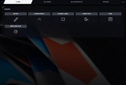
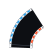
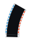
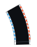
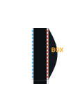

OmegaSim Wiki – die Idee dazu stammt von Gnen54. Hier stehen die offenen Artikel von Nutzer Luuke42 unter der Lizenz CC BY-SA 4.0.
Strecke
Stand dieses Artikels: OmegaSim 1.2.9 vom 26.10.2026 · Firmware des Autos: nicht bekannt (OmegaSim liest die Firmware-Version nicht aus)
Dieser Text wurde mithilfe von KI erstellt (Claude) und ist nicht in jedem Punkt von Menschen geprüft. Fehler bitte direkt verbessern oder auf der Diskussionsseite melden, siehe Mitmachen. Die öffentliche Fassung auf luuke42.github.io/omegasim kann älter sein als der hier beschriebene Stand.
Die Strecke eines Carrera HYBRID-Autos besteht aus lose ausgelegten Kunststoffteilen (Gerade, Kurven, Haarnadel, Start/Ziel und weitere), die auf ihrer Oberfläche ein für Menschen kaum sichtbares Balkenmuster tragen, oder aus gedruckten Mustern auf Papier. Ein Sensor an der Unterseite des Autos liest dieses Muster; das Auto meldet über Bluetooth Low Energy in jedem Statuspaket, welches Teil es zuletzt erkannt hat (Byte 12) und wie viele Teilwechsel es gezählt hat (Byte 11). Aus diesen beiden Zahlen zählt OmegaSim Runden, baut eine Streckenkarte, ortet die Autos auf der Karte und steuert NPCs, Safety Car und Startaufstellung. Dieser Artikel beschreibt die Teile, ihre Codes, wie das Auto sie liest, den Streckencode und den Streckenscan. Das Bauen und Einpassen einer Strecke in einen Raum steht unter Strecken- und Raum-Editor.


Auf einen Blick
| Merkmal | Inhalt |
|---|---|
| Menüpfad | Reiter Strecke (Unterseiten Editor, Streckenscan, Strecke laden, Meine Teile, Raum, Druckvorlagen); Fahren → Kachel Strecke; Optionen → Allgemein → Auf der Bahn |
| Wichtigster Schalter | Auf der Bahn (Leseart), Standard: an (setting-ontrack)
|
| Weitere Schalter | Strecke beim Fahren lernen (Standard aus), NPC braucht Streckencode (Standard aus), beide unter Optionen → NPC |
| Status | Leseart, Rundenzählung, Streckenscan, Streckencode: stabil. Codes für Boxengasse, Engstelle und 30-Grad-Kurven: nur aus einer fremden Tabelle, am Auto nicht gemessen. Druckvorlage Start/Ziel: stabil; Bahn zum Auslegen und Trapez-Muster: experimentell |
| Seit Version | Leseart-abhängige Startcodes seit 0.6.14, alle zwölf Teiltypen seit 0.6.19, Streckenscan in heutiger Form seit 0.7, Scan-Tempi von 1.2.5 |
| Quelldateien | src/60-track.js (Datenmodell, Codes, Geometrie, Streckencode, Scan), src/20-protocol.js (Leseart-Bits), src/50-drive.js (Leseart-Schalter, Scan-Tempo), src/90-ghosts.js (Scan-Fahrer, Kachelzeiten), src/70-race.js (Teillängen für die Tempomessung), tools/make_pattern.py, tools/make_track_sheets.py, tools/make_pattern_sheets.py, tools/make_patterns.py
|
Grundlagen
Dieser Abschnitt erklärt die Begriffe, ohne die der Rest des Artikels schwer zu lesen ist. Ausführlicher stehen sie im Glossar.
Bit, Byte und Hexadezimalzahl
Ein Bit ist die kleinste Informationseinheit, 0 oder 1. Acht Bits ergeben ein Byte, das 28 = 256 verschiedene Werte annehmen kann, also 0 bis 255. Programmierer schreiben Bytes gern als Hexadezimalzahl (Basis 16, Ziffern 0–9 und a–f), gekennzeichnet durch die Vorsilbe 0x. Zwei Hex-Ziffern beschreiben genau ein Byte, weil jede Hex-Ziffer genau vier Bits entspricht. Das Hexadezimalsystem erklärt die Umrechnung im Einzelnen.
| Hex | Dezimal | Binär (8 Bit) | Bedeutung in diesem Artikel |
|---|---|---|---|
0x01 |
1 | 00000001 | Start/Ziel auf der Kunststoffbahn |
0x0a |
10 | 00001010 | Engstelle auf der Bahn, Start/Ziel auf dem Original-Druckblatt |
0x20 |
32 | 00100000 | Bit 5: Leseart „Auf der Bahn“ |
0x80 |
128 | 10000000 | Bit 7: Leseart „Ausdruck“ |
0xff |
255 | 11111111 | Byte 12: „noch nie ein Muster gesehen“ |
0x100 |
256 | 1 00000000 (9 Bit) | interner Typ der Boxengasse; passt absichtlich nicht in ein Byte |
Das letzte Beispiel ist kein Zufall: Ein Byte kann höchstens 255 sein. Ein Wert wie 0x100 kann deshalb nie vom Auto gemeldet werden, und genau das nutzt OmegaSim für zwei Teile, deren gemeldeter Code mit einem anderen Teil kollidiert (siehe unten).
Mit einer Bitmaske prüft man einzelne Bits: (Byte & 0x08) != 0 heißt „Bit 3 ist gesetzt“. Der Ausdruck (neu − alt) & 0xff rechnet eine Differenz modulo 256: Zählt ein 8-Bit-Zähler von 255 auf 0 weiter („Überlauf“), ergibt (0 − 255) & 0xff = 1 und nicht −255.
Das Statuspaket und warum Byte 12 ein Teil ist
Über Bluetooth sendet das Auto regelmäßig ein Statuspaket („Notification“) von 19 Byte an die App. Jedes Byte hat eine feste Stelle und eine feste Bedeutung; die Stellen zählt man ab 0. Die für die Strecke wichtigen:
- Byte 11 – ein Zähler, der um 1 weiterspringt, sobald das Auto ein neues Teil betritt. Er läuft von 255 auf 0 über.
- Byte 12 – der Code des zuletzt gelesenen Musters. Der Wert bleibt stehen, bis ein anderes Muster gelesen wird.
0x00heißt „abseits der Bahn“,0xff„seit dem Einschalten noch nichts gelesen“. - Byte 15, Bit 3 (
0x08) – die Start/Ziel-Sperre: Sie geht an, wenn das Auto das Start/Ziel-Muster gelesen hat, und bleibt rund eine Sekunde an (gemessen 0,84 bis 1,01 s, Median 0,91 bzw. 0,94 s).
Byte 12 trägt also nicht „wo“ das Auto steht, sondern „was für ein Teil“ zuletzt unter ihm lag. Diese Zahl hat die Firmware des Autos aus dem Balkenmuster ausgewertet; die App bekommt nur das Ergebnis. Der Aufbau des ganzen Pakets steht unter Firmware und Bluetooth Low Energy.
Wie ein Sensor ein Balkenmuster liest
Ein Strichcode (Barcode) besteht aus Balken und Lücken zweier Breiten, schmal und breit. Ein optischer Sensor misst beim Darüberfahren, wie lange er hell und wie lange dunkel sieht; aus dem Verhältnis der Längen ergibt sich, ob ein Element schmal (0) oder breit (1) war. Weil nur Verhältnisse zählen, ist es egal, wie schnell das Auto fährt, solange es nicht so langsam oder so schnell ist, dass der Sensor die Übergänge nicht mehr sauber trennt. Die Folge der Nullen und Einsen ist ein Wort, und die Firmware übersetzt jedes bekannte Wort in eine Zahl, eben den Code in Byte 12. Rückwärts gelesen ergibt dasselbe Wort eine andere Folge; deshalb tragen die Druckvorlagen einen Fahrtrichtungspfeil.
Welche Bauart der Sensor im Auto hat (kleine Kamera oder einfacher Infrarot-Sensor), ist noch nicht gesichert. Die Muster auf den Kunststoffteilen sind im sichtbaren Licht kaum zu sehen, im Infrarotlicht dagegen deutlich.
Leseart
Der Sensor kennt zwei Lesearten mit je eigener Codetabelle: Auf der Bahn für die Kunststoffteile und Ausdruck für gedruckte Muster auf Papier. Die App wählt die Leseart mit zwei Bits in Byte 14 jedes Steuerbefehls, den sie an das Auto schickt. Die Leseart ist die wichtigste Einstellung dieses Artikels, weil dieselbe Zahl je Leseart etwas anderes bedeutet.
Kachel
Im Code heißt ein Streckenteil Kachel (englisch tile). Eine Strecke ist intern eine Liste von Kacheln, z. B. [Start, Rechtskurve, Rechtskurve, Gerade, …]. Die erste Kachel ist immer Start/Ziel.
Bedienung
Leseart wählen
- Optionen → Allgemein → Auf der Bahn einschalten, wenn das Auto auf Kunststoffteilen fährt (Standard), ausschalten für gedruckte Muster. Alternativ: auf der Kachel Fahren → Strecke den Titel antippen („Auf der Bahn“ / „Frei“), im Cockpit den Knopf Bahn bzw. Ausdruck drücken oder am Controller L1 / LB. Alle Wege schalten dieselbe Einstellung.
- Die App meldet „LIEST BAHN“ oder „LIEST AUSDRUCK“. Im Ausdruck-Modus ist der Cockpit-Knopf als Warnung hervorgehoben, weil sich das Auto dort nicht selbst auf der Bahn hält.
Eine Strecke bekannt machen (Bahn-Modus)
- Strecke aufbauen. Die Start/Ziel-Kachel ist Pflicht, weil Rundenzählung und Ortung an ihr hängen.
- Entweder Strecke → Streckenscan → Streckenscan drücken (das Auto fährt selbst und hält nach einer geschlossenen Runde an), oder die Strecke im Editor nachbauen, oder einen Streckencode einfügen, oder eine gespeicherte Strecke unter Strecke laden antippen.
- Prüfen: Die Strecke steht im Editor, die Anzeige „Status“ zeigt „Geschlossen ✓“ oder „Offen (Lücke cm, Winkel °)“.
Mit gedruckten Mustern fahren (Ausdruck-Modus)
- Strecke → Druckvorlagen öffnen (im Ausdruck-Modus auch über Fahren → Strecke → Druckvorlagen).
- Die SVG-Datei mit Skalierung 100 % bzw. „Tatsächliche Größe“ drucken, nie „an Seite anpassen“.
- Das 100-mm-Kontrollmaß auf dem Blatt mit einem Lineal nachmessen.
- Das Blatt mit dem Pfeil in Fahrtrichtung auslegen und überfahren.
- Optional: unter Fahren → Strecke → Foto ein Foto der ausgelegten Strecke hochladen; es erscheint im Cockpit statt des Editor-Layouts.
Einen unbekannten Code ablesen
- Entwickler-Reiter, Bereich Targets lesen (Rohcode-Monitor) öffnen und Zählen starten.
- Das Auto langsam von Hand über genau ein Teil schieben.
- Ablesen, welcher Wert in Byte 12 auftaucht. Der Monitor zählt jeden Wert, auch unbekannte (als „UNBEKANNT“ markiert), zeigt die rohen Bytes des letzten Pakets mit hervorgehobenen Bytes 11 und 12, die Zahl der Kachelschritte (Byte 11), die Zahl der Start/Ziel-Sperren (Byte 15, Bit 3) und ob der Scheinwerfer an ist, denn ein ausgeschalteter Scheinwerfer ist laut Code die häufigste Ursache für „es kommt nichts“.
Einstellungen
| Name in der App | Bereich | Standard | Wirkung (aus dem Code) | Schlüssel / ID |
|---|---|---|---|---|
| Auf der Bahn | an / aus | an | setzt trackMode auf 'on' bzw. 'off' und in jedem Steuerbefehl Byte 14 Bit 5 (0x20) bzw. Bit 7 (0x80); entscheidet, welche Codes als Start/Ziel gelten (isStartCode()), ob 0x0a die Engstelle ist (codeZuTyp()), welche Rennarten wählbar sind (seit 1.2.4) und ob Safety Car und Challenger-Rolle erlaubt sind |
setting-ontrack, Funktion applyScanMode() in src/50-drive.js
|
| Strecke beim Fahren lernen | an / aus | aus | setzt aus den gemeldeten Codes eines Autos eine Runde zusammen und übernimmt sie nach der zweiten Start/Ziel-Überfahrt, nur wenn im Editor höchstens die Start/Ziel-Kachel liegt; bricht nach 60 Teilen ohne zweite Überfahrt ab | ghost-learn → ghostCfg.learn, Funktion learnTick()
|
| NPC braucht Streckencode | an / aus | aus | an: ein NPC fährt nur mit gelesenem Muster | ghost-needcode → ghostCfg.needCode
|
| Streckenfoto | Bilddatei | keins | ersetzt im Ausdruck-Modus die Karte im Cockpit; empfohlen quer (4:3 oder 16:9) | fa-foto, Speicher omegasim-streckenfoto
|
| Gespeicherte Strecken | beliebig viele | leer | Name, Kachelliste, Drehung, Anlege- und Änderungszeit | Speicher carrera-hybrid-tracks
|
Streckenteile
OmegaSim unterscheidet zwölf Teiltypen (TILE_TYPE in src/60-track.js). Die Tabelle nennt für jeden Typ den Buchstaben im Streckencode (TRACK_CODE_LETTER), den Code, den das Auto in Byte 12 meldet, und die Geometrie, mit der die App das Teil zeichnet. Alle Maße beziehen sich auf die Mittellinie der 25 cm breiten Fahrbahn. Grundlage sind drei gemessene Zahlen: Kachellänge 43 cm, Bahnbreite 25 cm, Kurvenradius 37 cm (aus „eine Gerade plus eine 60-Grad-Kurve belegen 37 × 86 cm“, nachgerechnet 37,2 × 85,9 cm).
| Bild | Teil | Buchstabe | Code Bahn-Modus | Code Ausdruck-Modus | Winkel / Geometrie | Anmerkung |
|---|---|---|---|---|---|---|
| Start/Ziel | S | 0x01 |
0x0a (Original-Blatt), 0x01 (Blätter von OmegaSim) |
gerade, gezeichnet 43 cm lang wie eine Gerade; die Tempomessung rechnet mit 0,40 m | Bahn-Code durch seVen bestätigt; Kartentyp intern 0x0a; immer erste Kachel, nicht löschbar; weitere S-Kacheln gelten als Sektorgrenzen
| |
| Gerade | G | 0x02 |
nicht bekannt | 43 cm lang (40 Zeichnungseinheiten) | in Mitschnitten belegt; seVen nennt 43,2 cm | |
 |
Kurve rechts | R | 0x04 |
nicht bekannt | 60°, Radius 37 cm, Bogen 38,75 cm; Endpunkt 32,04 cm voraus und 18,50 cm nach rechts | in Mitschnitten belegt |
| Kurve links | L | 0x03 |
nicht bekannt | wie Kurve rechts, gespiegelt | Mitschnitt vom 21.08.2026 (Strecke „az2108“, 16 Runden, je ein 0x03 genau an der Linkskurve); bis dahin geraten als 0x08
| |
| Haarnadel rechts | H | 0x06 |
nicht bekannt | 21,91 cm gerade Sektion, dann 180° mit Radius 18,5 cm; Weg 80,03 cm; Endpunkt 21,91 cm voraus und 37 cm nach rechts, Fahrtrichtung umgekehrt; Außenbreite 2 × 18,5 + 25 = 62 cm | am 24.08.2026 mit dem Rohcode-Monitor gemessen | |
| Haarnadel links | J | 0x05 |
nicht bekannt | wie Haarnadel rechts, gespiegelt | am 24.08.2026 gemessen | |
 |
Weite 30°-Kurve rechts | W | 0x09 |
nicht bekannt | 30°, Radius 112 cm, Bogen 58,64 cm; Endpunkt 56,00 cm voraus und 15,01 cm nach rechts | Code nur aus seVens Tabelle; Radius aus einem Oval des Original-Editors (12 dieser Teile + 2 Geraden = 2,49 × 2,93 m Außenmaß, also 2R + 25 cm = 249 cm) |
 |
Weite 30°-Kurve links | Q | 0x08 |
nicht bekannt | wie W, gespiegelt | Code nur aus seVens Tabelle |
| Kleine 30°-Kurve rechts | K | 0x0c |
nicht bekannt | 30°, Radius 37 cm, Bogen 19,37 cm; Endpunkt 18,50 cm voraus und 4,96 cm nach rechts | Code nur aus seVens Tabelle; zwei kleine Kurven ergeben eine 60°-Kurve | |
| Kleine 30°-Kurve links | M | 0x0b |
nicht bekannt | wie K, gespiegelt | Code nur aus seVens Tabelle | |
 |
Boxengasse | B | 0x07 |
nicht bekannt | gerade, 86 cm (zwei Kachellängen), Ausbuchtung rechts gezeichnet | Code nur aus seVens Tabelle („Boxengasse / lange Gerade“); künstlicher Kartentyp 0x100
|
| Engstelle | E | 0x0a |
– (0x0a heißt dort Start/Ziel) |
gerade, 43 cm; gezeichnet je Seite um bis zu 34 % der halben Bahnbreite eingezogen (höchstens 4,25 cm, schmalste Stelle 16,5 cm) | Code nur aus seVens Tabelle („NarrowSection“); künstlicher Kartentyp 0x101; die Einschnürung ist eine Darstellung, keine Messung
|


Zwei weitere Werte von Byte 12 sind keine Teile:
| Code | Bedeutung | Verwendung in OmegaSim |
|---|---|---|
0x00 |
abseits der Bahn, kein gültiges Muster | sofortiges Signal für „Bahn verlassen“; beim Scan und beim Lernen von der Mehrheitswahl ausgeschlossen |
0xff |
seit dem Einschalten noch nie ein Muster gesehen | von der Mehrheitswahl ausgeschlossen |
Wie die Geometrie entsteht
Die App zeichnet eine Strecke wie eine Schildkröte, die Schritt für Schritt läuft (Turtle-Grafik, Funktion trackCenterline()): Jede Kachel beginnt genau dort, wo die vorige endet, mit derselben Fahrtrichtung. Eine Gerade schiebt den Punkt um ihre Länge in Fahrtrichtung, eine Kurve führt ihn auf einem Kreisbogen um den Drehwinkel weiter. Für eine Kurve mit Drehwinkel Δ und Radius R, die bei Fahrtrichtung h beginnt, gilt (h im Uhrzeigersinn von „oben“, y-Achse zeigt auf dem Bildschirm nach unten, s = +1 für rechts, −1 für links):
Verschiebung = s · R · ( cos h − cos(h + Δ) , sin h − sin(h + Δ) ) neue Richtung = h + Δ Haarnadel: vorher zusätzlich L_H · ( sin h , −cos h ), L_H = 2 · (43 − 37 · cos 30°) = 21,914 cm
- Die gerade Sektion L_H der Haarnadel ist exakt aus einer Schließbedingung gelöst: Die Strecke
SHG4R4LGdreht 180° + 4 × 60° − 60° = 360° und muss sich deshalb schließen; das ergibt zwei Gleichungen (x und y) mit zwei Unbekannten (Radius 18,5 cm und gerade Sektion 21,9141 cm), Restfehler 0,000000 cm. Ein früher aus einem Bildschirmfoto abgelesener Wert von 28 cm war um 6,09 cm zu groß. - Jede Kachel wird in 14 Punkten abgetastet (
TRACK_SAMPLES_PER_TILE); Kurven mit großem Drehwinkel bekommen anteilig mehr: max(14, round(14 · |Δ| / 60°)). Eine Haarnadel hat damit 42 Bogenpunkte plus max(2, round(14 · 21,91/43)) = 7 Punkte der geraden Sektion, zusammen 49. - Umrechnung: 40 Zeichnungseinheiten entsprechen 43 cm, also
TRACK_UNITS_PER_CM= 40/43 = 0,9302.
Geschlossen oder offen?
Ob eine Kachelfolge eine Runde ergibt, prüft trackSchluss() an der Mittellinie mit zwei Bedingungen:
Lücke = |Endpunkt − Anfangspunkt| / 0,9302 ≤ 15 cm (TRACK_SCHLUSS_CM) Winkel = Richtung am Ende − Richtung am Anfang ≤ 12° (TRACK_SCHLUSS_GRAD, auf ±180° gefaltet)
15 cm sind ein Drittel einer fehlenden Kachel (43 cm) und lassen den Modellfehler von rund zwanzig Teilen durch (1 % Längenfehler auf 20 Kacheln sind schon 8,6 cm). Ohne die Winkelbedingung würde z. B. SR2G2R2G2R2G2R2G2 mit kleiner Lücke als Ring gelten, obwohl es um 120° verdreht ankommt. Die Zufallsstrecke verlangt strenger höchstens 3 cm (TRACK_SCHLUSS_STRENG_CM).
Funktionsweise
Die zwei Lesearten
Byte 14 jedes Steuerbefehls trägt die Leseart:
| Bit | Wert | Name im Code | Wirkung |
|---|---|---|---|
| Bit 5 | 0x20 |
TRACK_BIT_RAIL |
liest die Kodierung der Kunststoffschiene, das Auto hält sich selbst auf der Bahn |
| Bit 7 | 0x80 |
TRACK_BIT_PRINT |
liest gedruckte Muster; das Auto hält sich nicht selbst |
| Bit 6 | 0x40 |
– | kommt in beiden Zuständen vor, gehört zu etwas anderem und bleibt 0 |
Die beiden Bits schließen sich aus. Gemessen ist: Auf der echten Bahn brachten mit Bit 5 87 % der Meldungen einen Teilwechsel, ohne dieses Bit 7 %; mit Bit 7 kamen auf der Bahn null Lesungen in 551 Fahrmeldungen. Ein Papierblatt auf der Bahn liefert mit Bit 5 nur 0x00. Am 26.08.2026 wurde mit der Original-App bestätigt, dass ein Ausdruck nur in der Stellung „Ohne Bahn“ (Bit 7) erkannt wird.
| Auf der Bahn | Ausdruck (in FAHREN: „Frei“) | |
|---|---|---|
| Was gelesen wird | Kunststoffteile | gedruckte Muster |
| Auto hält sich selbst auf der Bahn | ja | nein |
| Gilt als Start/Ziel | nur 0x01 |
0x0a und 0x01
|
| Streckenscan, Editor, Laden, Raum in der FAHREN-Kachel | ja | nein |
| Druckvorlagen, Streckenfoto in der FAHREN-Kachel | nein | ja |
| NPCs, Safety Car, Reinigungsfahrzeug, Challenger | ja | nein (Autos mit den Rollen Safety Car, Reinigungsfahrzeug und Challenger werden beim Wechsel auf „Aus“ gestellt, bahnRollenPruefen())
|
| Nicht wählbare Rennart (seit 1.2.4) | Demolition Derby | Time Attack |
Beim Wechsel auf eine Leseart, in der die gewählte Rennart nicht erlaubt ist, springt die Wahl auf Training, und eine Meldung nennt den Grund. Stehen im Ausdruck-Modus NPCs oder ein Safety Car in der Garage, warnen Rennstart und Meisterschaft.
Die zwei Codetabellen
Dieselbe Zahl in Byte 12 bedeutet je Leseart etwas anderes. Das ist der Punkt, an dem die Entzifferung monatelang falsch lief: Dasselbe gedruckte Blatt hatte 0x0a, 0x03 und 0x01 gemeldet, und daraus wurde geschlossen, der Unterschied liege im Druck (Maßstab, Strichbreite, Schwärze). Er lag an der Leseart.
| Code | Bahn-Modus (Bit 5) | Ausdruck-Modus (Bit 7) | Quelle |
|---|---|---|---|
0x00 |
abseits der Bahn | – | Mitschnitte (Leitplanken-Mitschnitt 20.08.2026: 16 von 38 Wechseln) |
0x01 |
Start/Ziel | Start/Ziel auf den Blättern von OmegaSim | seVen, bestätigt für den Bahn-Modus; App-Blätter tragen das 0x01-Wort
|
0x02 |
Gerade | nicht bekannt | Mitschnitte |
0x03 / 0x04 |
Kurve links / rechts | nicht bekannt | Mitschnitte |
0x05 / 0x06 |
Haarnadel links / rechts | nicht bekannt | gemessen 24.08.2026 |
0x07 |
Boxengasse bzw. lange Gerade | nicht bekannt | nur seVen |
0x08 / 0x09 |
weite 30°-Kurve links / rechts | nicht bekannt | nur seVen |
0x0a |
Engstelle | Start/Ziel auf dem Original-Blatt von Carrera | Bahn: seVen; Ausdruck: gemessen 25.08.2026 |
0x0b / 0x0c |
kleine 30°-Kurve links / rechts | nicht bekannt | nur seVen |
0xff |
noch nie gelesen | noch nie gelesen | Mitschnitte |
Hinweis: Ältere Texte (eine Tabelle in CARRERA_HYBRID.md bis 0.6.14, der Kopfkommentar von tools/make_patterns.py) führen 0x0a noch als Start/Ziel im Bahn-Modus. Maßgeblich ist der Code.
Start/Ziel: isStartCode()
Ob ein gemeldeter Code als Ziellinie zählt, entscheidet eine einzige Funktion:[1]
function isStartCode(c) {
if (typeof trackMode === 'string') {
if (trackMode === 'on') return c === START_CODE_RAIL; // 0x01
return c === START_CODE_PRINT || c === START_CODE_RAIL; // 0x0a oder 0x01
}
return START_CODES.indexOf(c) >= 0; // Rückfall [0x0a, 0x01]
}
Im Ausdruck-Modus gelten beide Werte, weil das Original-Blatt 0x0a meldet (gemessen 25.08.2026) und die Blätter von OmegaSim das Wort tragen, das 0x01 ergibt. Auf der Bahn gilt nur 0x01: Sonst würde jede überfahrene Engstelle (0x0a) eine Phantomrunde zählen und das Streckenlernen dort neu anfangen. Der Rückfall auf die Liste greift nur, solange die Leseart noch nicht gesetzt ist; lieber ein Code zu viel als eine verlorene Rundenzählung.
Künstliche Typen und die Übersetzung codeZuTyp
Die Karte führt Start/Ziel seit jeher als 0x0a. Auf der Schiene ist 0x0a aber die Engstelle: dieselbe Zahl, zwei Bedeutungen. Den Kartentyp von Start/Ziel zu ändern hätte bedeutet, jede gespeicherte Strecke umzuschreiben. Deshalb bekommen Engstelle und Boxengasse Typen außerhalb des Bytebereichs (0x101 und 0x100), die das Auto nie senden kann. Die Übersetzung vom gemeldeten Code zum Kartentyp steht an genau einer Stelle:[2]
function codeZuTyp(code) {
if (code === undefined || code === null) return code;
if (isStartCode(code)) return TILE_TYPE.START; // 0x0a (Kartentyp)
if (code === CODE_PIT) return TILE_TYPE.PIT; // 0x07 -> 0x100
if (typeof trackMode === 'string' && trackMode === 'on' && code === CODE_ENGE) {
return TILE_TYPE.ENGE; // 0x0a -> 0x101, nur Bahn
}
return code; // alle anderen 1:1
}
Leseart (trackMode) |
Byte 12 | isStartCode |
Kartentyp nach codeZuTyp |
Folge |
|---|---|---|---|---|
Bahn ('on') |
0x01 |
ja | Start/Ziel (0x0a) |
Runde zählen, Anker für Scan und Lernen |
| Bahn | 0x0a |
nein | Engstelle (0x101) |
keine Runde; NPCs drosseln wie in der Haarnadel |
| Bahn | 0x07 |
nein | Boxengasse (0x100) |
Teil wird benannt |
| Bahn | 0x02 … 0x06, 0x08, 0x09, 0x0b, 0x0c |
nein | unverändert | Teil wird benannt |
Ausdruck ('off') |
0x0a |
ja | Start/Ziel | Runde zählen |
| Ausdruck | 0x01 |
ja | Start/Ziel | Runde zählen |
| nicht gesetzt | 0x0a oder 0x01 |
ja (Liste) | Start/Ziel | Rückfall |
Weil gespeicherte Strecken den Typ als Zahl halten, wandert migrateTiles() beim Laden alte Strecken, deren Start noch als 0x01 gespeichert war, auf 0x0a um und meldet das im Protokoll.
Wie das Auto die Teile liest
Was gemeldet wird
Laut Code-Kommentar meldet das Auto mit etwa 14,6 Hz (Median 69 ms zwischen zwei Paketen); die Doku-Tabelle der App nennt 45 bis 60 ms. Byte 12 hält den zuletzt gelesenen Code, Byte 11 zählt die Wechsel. Weil Byte 12 stehen bleibt, sieht die App einen Teilwechsel nur am Sprung von Byte 11, und welcher Code zum verlassenen Teil gehörte, entscheidet sie per Mehrheitswahl über alle Pakete zwischen zwei Sprüngen (siehe Streckenscan).
Warum das Auto in der Bahn bleibt
Kein Byte meldet die Querlage. Aus einem Mitschnitt der Original-App im Leitplanken-Modus (20.08.2026, 552 Pakete) geht hervor: Mit Byte 14 Bit 5 schickt die App in den Bytes 16 bis 18 die nächsten drei Teiltypen als gleitendes Fenster über die gescannte Strecke mit (neun verschiedene Fenster, alle aufeinanderfolgende Dreiergruppen eines Rings; zufällig wäre das 1,3 · 10−6). Die Deutung im Code: Die Querlage wird im Auto selbst aus dem keilförmigen Muster unter dem Sensor gelesen, die App sagt nur an, wohin die Bahn als Nächstes biegt, und das Auto korrigiert an Bord. Das passt dazu, dass die Melderate (14,6 Hz) für eine Regelung über die App zu langsam wäre. Diese Deutung ist plausibel, aber noch nicht gesichert.
Das Start/Ziel-Muster
Das einzige vollständig bekannte Wort ist das von Start/Ziel, ausgelesen aus den Vektorkoordinaten der Original-Druckvorlage (tools/make_pattern.py), nicht nachgemessen:
dünner Balken 3,598 mm dicker Balken 6,604 mm Verhältnis 1,83 dünne Lücke 3,514 mm dicke Lücke 6,530 mm Balkenbreite quer 275,9 mm (volle A4-Breite, bei 250 mm Bahnbreite) Musterlänge in Fahrtrichtung 75,5 mm 9 Balken: 000010010 8 Lücken: 00010110 (1 = dick, in Leserichtung)
Balken und Lücken tragen beide Information, zusammen 17 Elemente je Wort. Nachgerechnet: 7 dünne Balken (25,19 mm) + 2 dicke Balken (13,21 mm) + 5 dünne Lücken (17,57 mm) + 3 dicke Lücken (19,59 mm) = 75,55 mm.
Drei Messungen am Auto (gedrucktes Start/Ziel-Blatt):
- Die drei führenden dünnen Striche lassen sich abschneiden; das Blatt wird weiter gelesen. Der Vorlauf ist also kein Nutzdatum, sondern die Strecke, auf der sich der Leser auf die Modulbreite einstellt.
- Eines der beiden wiederholten Muster genügt. Die kleinste tragende Nutzlast ist damit ein Wort ohne Vorlauf, etwa 54 mm in Fahrtrichtung.
- Nach einem Erkennen bleibt der Leser etwa eine Sekunde stumm. Bei 4 km/h Maßstabstempo sind das 1,1 m Fahrweg, gut zweieinhalb Kachellängen. Ein Muster öfter als etwa jeden Meter zu wiederholen bringt deshalb im Ausdruck-Modus nichts.
Das Muster auf den Kunststoffteilen
Auf den Kunststoffteilen bedecken die Balken die ganze Kachel, 40 und mehr je sichtbarem Abschnitt; das Wort wiederholt sich fortlaufend, damit das Auto es liest, wo immer es auffährt. In Kurven laufen die Balken radial und treffen sich im Kurvenmittelpunkt. Ein Video der Grand Garage zeigt die Unterseite eines Autos über der Bahn im Infrarotlicht, auf dem die trapezförmigen Balken sichtbar sind (Video der Grand Garage auf YouTube, ab 1:22). Nach eigenen Infrarot-Fotos und einer Referenzzeichnung beschreibt der Nutzer die Balken als senkrechte Trapeze, oben etwa 5 mm und unten etwa 20 mm breit, mit Lücken derselben Form kopfüber; das ist eine grobe Schätzung von außen, keine Messung.
Der gescheiterte Entzifferungsversuch vom 31.08.2026
Fünf Infrarot-Aufnahmen echter Teile (Start/Ziel, Gerade, Rechtskurve, aus einem Video) wurden ausgemessen. Der Versuch ist messbar gescheitert:
| Prüfmaß | erwartet | gemessen |
|---|---|---|
| Restabstand des Fluchtpunkt-Fits der Balkenlinien | wenige Pixel | 237 bis 579 px |
| Verhältnis dicker zu dünner Balken | 1,83 | 1,09 bis 1,68 |
Der erste Wert sagt, dass sich die Balkenlinien nicht in einem Punkt treffen; sie sind also nicht das Bild parallel liegender Linien, und ohne diese Annahme lässt sich das Bild nicht perspektivisch entzerren. Der zweite sagt, dass die beiden Breitenklassen im Rauschen verschwimmen (JPEG-Kompression auf 20-Pixel-Merkmale, Weitwinkelverzerrung, ein Lichtfleck in der Bildmitte, eine Hand im Bild). Drei Auswerteverfahren scheiterten aus je eigenem Grund:
- Waagerechte Abtastlinie: Ein um θ gekippter Balken erscheint um 1/cos θ zu breit; die fächerförmigen Balken lieferten Breitenverhältnisse bis 1:100, also Perspektive statt Information.
- Dicke senkrecht zum Balken über eine Hauptachsenzerlegung je Gebiet: richtig gemessen, aber eine globale Fahrtrichtung projizierte Balken aus verschiedenen Radien auf dieselbe Achse; es entstanden negative Lücken.
- Kleine Felder mit lokal gemessenem Winkel: sauber, aber je Feld nur 6 bis 9 Balken; daraus lässt sich keine Trennung in zwei Breitenklassen belegen.
Was die Bilder trotzdem belegen: die durchgehende Bedeckung und die radialen Balken in Kurven (genau deshalb schlug der Fluchtpunkt-Fit dort fehl). Was es bräuchte: einen Flachbett-Scan eines echten Teils mit 300 dpi; ein einziger Scan einer Geraden und einer Kurve würde beide Wörter liefern. Bis dahin sind die Wörter für Gerade (0x02) und Rechtskurve (0x04) nicht entziffert.
Druckvorlagen
Unter Strecke → Druckvorlagen liegen SVG-Dateien. Jedes Blatt trägt ein 100-mm-Kontrollmaß und einen Fahrtrichtungspfeil.
| Vorlage | Datei | erzeugt von | Status | Inhalt |
|---|---|---|---|---|
| Start/Ziel | startziel-a4.svg |
tools/make_pattern.py |
stabil | A4 quer, direkt aus der Original-Vorlage; zählt Runden. Das Werkzeug liest die Rechtecke aus dem PDF-Inhaltsstrom, damit keine Zahl abgetippt wird |
| Schneidebogen | spur-schneidebogen-a4.svg |
tools/make_track_sheets.py |
stabil | vier gekürzte Start/Ziel-Marken (rund 51 mm, ohne die drei führenden dünnen Balken) auf A4 hochkant mit Schnittlinien |
| Bahn zum Auslegen | spur-gerade-1/2-a4.svg, spur-kurve-1/2-a4.svg |
tools/make_track_sheets.py |
experimentell | Gerade als zwei A4-Blätter quer (je 202 mm Fahrweg), 30°-Kurve als zwei Blätter mit je 15°; Kurvenbalken radial mit konstanter Bogenlänge auf der Mittellinie. Tragen das Start/Ziel-Wort, melden also überall Start/Ziel |
| Trapez-Muster | muster-gerade-a4.svg, muster-kurve-60grad-a4.svg, muster-kurve-60grad-versionb-a4.svg |
tools/make_pattern_sheets.py |
experimentell | rein optisch, ohne Anspruch auf Maschinenlesbarkeit, randlos: Gerade mit 12 Trapezen (oben 5 mm, unten 20 mm), Kurve A mit 8 radialen Keilen auf A4 skaliert, Kurve B in echter Größe (Radius 370 mm, Breite 250 mm), absichtlich abgeschnitten |
| Boxengasse | – | tools/make_patterns.py |
entfernt | seit 0.4.49 auskommentiert, weil die Nummer des Musters geraten und nicht entziffert war |
tools/make_track_sheets.py tippt keine Zahl ab: Es liest die Modulmaße aus startziel-a4.svg zurück und die Streckenmaße (43 cm, 25 cm, 37 cm) aus src/60-track.js. Die Kurvenbalken laufen mit konstanter Bogenlänge auf der Mittellinie und nicht mit konstantem Winkel, sonst wäre das Modulmaß am äußeren Rand größer als am inneren und der Sensor läse je nach Linie eine andere Folge. Ob eine Papierbahn überhaupt wie die echte gelesen wird, hängt an der Infrarot-Rückstrahlung von Toner und Papier und ist nicht gesichert.
Streckenscan
Der Streckenscan (garageScanStart(), garageScanTick()) lässt ein Auto selbst über die Bahn fahren und schreibt die gelesenen Teile mit. Er setzt die Leseart „Auf der Bahn“ voraus.
Ablauf
- Der Knopf Streckenscan wählt das Auto: Spieler 1, sonst das erste Auto mit der Rolle Spieler, sonst das erste verbundene Auto. Ist es kein Fahrerauto, fährt es seit 1.0.37 mit einem eigenen Sendetakt (
scanFahrStart(), TaktCONTROL_SEND_INTERVAL_MS). - Das Auto fährt mit Querlage 0 und Spur-Bytes: Byte 10 =
0x20, Byte 15 =0x0c, Byte 16 = der gerade gelesene Code, durchgelassen werden nur0x0aund0x02bis0x06(scanLiveCode()), alles andere wird als0x02gesendet, Bytes 17 und 18 =0x02. Neben der Bahn (0x00) gibt es kein Gas und das Bremslicht geht an. - Status „Wartet auf die erste Überfahrt von Start/Ziel …“. Teile vor dem ersten Anker werden verworfen.
- Ab dem ersten Anker schreibt der Scan jede Kachel in eine Liste, die mit Start/Ziel beginnt.
- Beim nächsten Anker prüft er mit
trackSchluss(trackCenterline(Liste)), ob die gemessene Runde geschlossen ist und mindestens 3 Teile hat. Wenn ja: Übernahme in den Editor, Meldung „Fertig: n Teile, Rundkurs geschlossen (Lücke … cm, Winkel …°)“, das Auto hält an (1,5 s Haltezeit). - Wenn nein: noch eine Runde messen, höchstens 5 Versuche (
GARAGE_SCAN_VERSUCHE_MAX), danach Abbruch mit Lücke in cm. - Mehr als 60 Teile ohne zweite Start/Ziel-Überfahrt: Abbruch.
Kachelgrenze, Mehrheitswahl und zwei Anker
- Kachelgrenze: Byte 11 hat sich gegenüber dem letzten Paket geändert. Der Scan wertet nur den Wechsel aus, nicht die Differenz.
- Mehrheitswahl: Zwischen zwei Grenzen zählt der Scan jeden Wert von Byte 12. An der Grenze gewinnt der häufigste Wert, ohne
0xffund0x00, denn0xffist der häufigste Wert überhaupt. Gibt es keinen gültigen Wert, wird die Kachel übersprungen. - Zwei Anker: (a) die steigende Flanke der Start/Ziel-Sperre (Byte 15 Bit 3) irgendwo während der Kachel, oder (b)
isStartCode(Mehrheitswert). Die Sperre ist der zuverlässigere Anker, weil sie auch dort kommt, wo der Startcode nie erkannt wird. Die beiden meinen verschiedene Kacheln: Der Startcode sagt „die gerade beendete Kachel war Start/Ziel“, die Sperre steigt schon beim Lesen des Startmusters, also an der Grenze davor; deshalb wird bei einem Sperren-Anker die gerade beendete Kachel noch an die alte Runde angehängt. Ohne diese Unterscheidung lernte eine Runde aus sechs Teilen nur fünf.
| Zustand | Bedingung an der Kachelgrenze | Aktion | nächster Zustand |
|---|---|---|---|
| Warten | kein Anker | nichts | Warten |
| Warten | Anker | Liste = [Start/Ziel] | Messen |
| Messen | kein Anker | Mehrheitswert anhängen; bei mehr als 60 Teilen Abbruch | Messen / Aus |
| Messen | Anker, Runde geschlossen, mindestens 3 Teile | Liste in den Editor, Auto anhalten | Aus (fertig) |
| Messen | Anker, nicht geschlossen, Versuch ≤ 5 | Liste = [Start/Ziel], Versuch + 1 | Messen |
| Messen | Anker, nicht geschlossen, Versuch > 5 | Abbruch mit Lücke in cm | Aus |
| jeder | Knopf „Scan abbrechen“ | Abbruch | Aus |
Tempo
Das Scan-Tempo ist ein Anteil des Formationstempos. Das Formationstempo ist max(PIT_SPEED_FACTOR, GHOST_READ_MIN) = max(80 / 68,1 / 4,0 ≈ 0,294; 0,35) = 0,35 der Höchstgeschwindigkeit.
| gemeldetes Teil (Schärfeklasse) | Konstante | Anteil am Formationstempo | Anteil an der Höchstgeschwindigkeit |
|---|---|---|---|
| Gerade, Start/Ziel, weite 30°-Kurve, Boxengasse (0) | SCAN_TEMPO |
0,80 | 0,28 |
| 60°-Kurve, kleine 30°-Kurve (1) | SCAN_TEMPO_KURVE |
0,67 | ≈ 0,235 |
| Haarnadel, Engstelle (2) | SCAN_TEMPO_HAARNADEL |
0,47 | ≈ 0,165 |
Die Klasse kommt aus tileTightness(codeZuTyp(Byte 12)), also aus dem Teil, auf dem das Auto gerade steht, ohne Vorausblick. Das Gas ist mindestens das 1,5-Fache von minMoveThrottle. Laut Kommentar in src/50-drive.js war die Haarnadel vor 1.1.15 mit 0,14 der Höchstgeschwindigkeit „gerade so“ schnell genug, dass das Auto noch Balken und Querlage bestimmen konnte; 1.2.5 hob die Gerade auf 0,80, weil es bei zu langsamer Fahrt Fehllesungen gab.
Der Kachelzähler und die Kacheldauer
Die Ortung auf der Karte (nicht der Scan) zählt seit 1.2 die wirkliche Zahl der Schritte, weil unter Funklast Pakete verloren gehen und Byte 11 dann um 2 springt:[3]
Schritte = max(1, min(3, (neu − alt) & 0xff))
Beispiele: alt 17, neu 18 → 1. Alt 255, neu 0 → (0 − 255) & 0xff = 1 (Überlauf). Alt 254, neu 1 → 3. Alt 250, neu 0 → 6, gedeckelt auf 3.
Wo das Auto innerhalb einer Kachel ist, meldet es nicht. Die Phase (0 am Eingang, 1 am Ausgang) wird geschätzt als (jetzt − Kachelbeginn) ÷ erwartete Dauer. Die erwartete Dauer wird je Teiltyp als gleitender Mittelwert geführt:
Dauer_Typ ← 0,7 · Dauer_Typ + 0,3 · gemessen (nur wenn 250 ms ≤ gemessen ≤ 4000 ms und genau 1 Schritt)
Werte außerhalb von 250 bis 4000 ms (GHOST_TILE_MS_MIN/_MAX) gelten als Ausreißer, etwa ein verlorenes Paket, das wie eine doppelt lange Kachel aussieht. Solange ein Typ noch keine Messung hat, gilt die mittlere Dauer aller Kacheln mal dem geometrischen Längenverhältnis tileLength(Typ) / mittlere Kachellänge:
| Teil | Weglänge (tileLength) |
Verhältnis zur Geraden |
|---|---|---|
| Gerade, Start/Ziel, Engstelle | 43,00 cm | 1,00 |
| 60°-Kurve | 38,75 cm | 0,90 |
| kleine 30°-Kurve | 19,37 cm | 0,45 |
| weite 30°-Kurve | 58,64 cm | 1,36 |
| Haarnadel (mit gerader Sektion) | 80,03 cm | 1,86 |
| Boxengasse | 86,00 cm | 2,00 |
Gemessen an den NPCs dauert eine 60°-Kurve 1,18-mal und eine Haarnadel 1,43-mal so lang, wie das geometrische Verhältnis vorhersagt, weil dort gebremst wird. Mit der Messung je Typ fiel der Anteil der Takte, in denen die Phase in Kurven am Deckel 1 klebt, bei 1,2-facher Kurvendauer von 12 % auf 3 %, bei 1,4-facher von 20 % auf 5 %, bei 1,8-facher von 29 % auf 10 %. Für die Tempomessung (tileLengthM() in src/70-race.js) gelten eigene Längen: Start/Ziel 0,40 m (in gleichen Computerrunden 6 % kürzer als eine Gerade), Gerade 0,43 m, 60°-Kurve 0,3875 m, Haarnadel 0,8003 m.
Weitere Wege, eine Strecke zu lernen
- Strecke beim Fahren lernen (
learnTick()): dieselbe Mehrheitswahl und dieselben zwei Anker wie der Scan, aber ohne Schlussprüfung und nur, wenn noch keine Strecke liegt; genau ein Auto speist das Lernen. Vor dem ersten Anker zählt es mit und meldet nach 8 und 25 Teilen „Start/Ziel noch nicht gesehen“. - Strecke aus einer Aufnahme lernen (WIP,
src/90c-macro-track.js): spielt eine aufgezeichnete Fahrt einmal ab und schaltet dafür das Lernen vorübergehend ein. - Der frühere Live-Scan (mitlesen, während man selbst fährt) ist seit 0.9.64 aus der Oberfläche entfernt.
Streckencode
Der Streckencode ist eine kurze, lesbare Zeichenkette, die eine Strecke vollständig beschreibt: welche Teile in welcher Reihenfolge und wie die ganze Strecke gedreht ist. Er steht im Editor unter der Karte mit dem Knopf Kopieren; darunter nimmt ein Feld einen Code von einem anderen Gerät an (Übernehmen). Das Verfahren ist eine Lauflängenkodierung: Gleiche aufeinanderfolgende Teile werden zu „Buchstabe + Anzahl“ zusammengefasst.
Kodieren (trackToCode)
- Für jeden Lauf gleicher Teile: Buchstabe aus
TRACK_CODE_LETTER, dahinter die Anzahl, wenn sie größer als 1 ist. - Teile ohne Buchstaben (etwa ein roh übernommener Code wie
0x07) werden übersprungen. - Ist die Drehung nicht 0, folgt
@und der Winkel in Grad (0 bis 315 in 45°-Schritten).
Der Buchstabe I ist bewusst nicht vergeben, weil er von einer 1 nicht zu unterscheiden wäre.
Grammatik (codeToTrack)
Der Leser baut seine beiden regulären Ausdrücke aus derselben Buchstabenliste wie der Kodierer, damit kein Buchstabe nur auf einer Seite bekannt ist. Das ist eine Lehre aus einem Fehler: Die Linkshaarnadel J wurde früher geschrieben, aber nicht gelesen und fiel beim Einlesen still heraus.[4]
Ganzer Code: ^([GLRJHQWSMKBE0-9]*)(?:@([0-9]{1,3}))?$
Je Teil: ([GLRJHQWSMKBE])([0-9]*) (global, nacheinander)
Code = Teile [ "@" Winkel ]
Teile = Teil { Teil }
Teil = Buchstabe [ Anzahl ]
Buchstabe= "S" | "G" | "R" | "L" | "H" | "J" | "W" | "Q" | "K" | "M" | "B" | "E"
Anzahl = Ziffer { Ziffer } (Wert 1 bis 99)
Winkel = Ziffer [ Ziffer [ Ziffer ] ]
Regeln beim Einlesen:
- Leerzeichen am Rand werden entfernt, Kleinbuchstaben in Großbuchstaben umgewandelt. Leerzeichen innerhalb des Codes machen ihn ungültig.
- Eine Anzahl außerhalb von 1 bis 99 (also auch
G0) macht den ganzen Code ungültig. Ziffern vor dem ersten Buchstaben passen zwar auf den ersten Ausdruck, werden vom zweiten aber ignoriert. - Beginnt die Strecke nicht mit S, wird Start/Ziel vorangestellt, weil jede Strecke damit beginnen muss.
- Der Winkel wird auf das nächste Vielfache von 45° gerundet und modulo 360 genommen:
Winkel = (round(w / 45) · 45) mod 360. - Ungültig: Die App meldet „Code nicht lesbar. Erwartet z. B. SG3R2G2R2@90“.
Beispiele
| Eingabe | Ergebnis | Erklärung |
|---|---|---|
SG3R2 |
S, G, G, G, R, R (6 Teile) | offen: dreht nur 120° |
SR3G2R3G |
10 Teile, Lücke 0,00 cm | Oval: zweimal 180° mit je 3 Rechtskurven, Mittellinie 74 × 160 cm |
SR3GLR2GR2G2 |
13 Teile, Lücke 0,48 cm, Winkel 0° | die Vorgabestrecke (TRACK_VORGABE_CODE), Länge 5,25 m
|
SHG4R4LG |
12 Teile, Lücke 0,00 cm | dreht 180° + 240° − 60° = 360°; an ihr wurde die gerade Sektion der Haarnadel gelöst |
sg2hg2j@100 |
S, G, G, H, G, G, J, Drehung 90° | klein geschrieben ist erlaubt; round(100/45) = 2, also 90° |
G4R6 |
S, G4, R6 | S wird vorangestellt |
SG0R |
ungültig | Anzahl 0 |
SG2 R3 |
ungültig | Leerzeichen im Code |
SGIG |
ungültig | I ist kein Teil |
Beispiele
Ein Code, zwei Bedeutungen
Ein Auto meldet in Byte 12 den Wert 0x0a.
- Leseart „Auf der Bahn“:
isStartCode(0x0a)prüft0x0a === 0x01→ nein.codeZuTyp(0x0a): kein Startcode, nicht0x07, Leseart'on'und Code0x0a→ Engstelle (0x101). Keine Runde; NPCs drosseln wie in der Haarnadel (Schärfeklasse 2). - Leseart „Ausdruck“:
isStartCode(0x0a)→0x0a === 0x0a→ ja. Das Original-Druckblatt hat die Ziellinie überquert, die Runde zählt.
Mehrheitswahl an einer Kachelgrenze
Zwischen zwei Sprüngen von Byte 11 (von 41 auf 42) kommen 9 Pakete mit Byte 12 = 0xff, 0xff, 0x04, 0x04, 0x04, 0xff, 0x04, 0x02, 0x04.
- Zählung:
0xff3-mal (ausgeschlossen),0x045-mal,0x021-mal. - Gewinner:
0x04→ Rechtskurve. - Byte 15 Bit 3 war in diesen Paketen nie gesetzt und
0x04ist kein Startcode → kein Anker, „R“ wird an die Liste gehängt.
Scan einer Dreiecksstrecke
Aufgebaut ist SR2GR2GR2 (9 Teile).
- Das Auto steht auf der zweiten Geraden. Bis zur Start/Ziel-Kachel liest es G, R, R; Zustand bleibt „Warten“.
- Beim Lesen des Startmusters steigt die Sperre; an der Grenze danach liegt der erste Anker. Liste = [S].
- Danach kommen R, R, G, R, R, G, R, R; die Liste hat 9 Einträge.
- Zweiter Anker: Die Mittellinie von
SR2GR2GR2schließt mit 0,00 cm Lücke (Winkelanzeige −2,1°, ein Abtasteffekt, weit unter 12°) → geschlossen, mindestens 3 Teile → Übernahme. Meldung „Fertig: 9 Teile, Rundkurs geschlossen“. - Hätte das Auto eine Kurve als Gerade gelesen, wäre die Lücke groß gewesen; dann misst es bis zu viermal neu.
Länge einer Strecke
Die Vorgabestrecke SR3GLR2GR2G2 hat 5 gerade Kacheln (S und vier G) und 8 Kurven: 5 × 43,00 + 8 × 38,75 = 215,0 + 310,0 = 525,0 cm. Der Editor zeigt „Länge 5,25 m · 1:50 = 0,26 km“. Für die Phasenschätzung ist die mittlere Kachellänge 525,0 / 13 = 40,4 cm; eine Gerade bekommt damit den Faktor 43,0 / 40,4 = 1,06, eine Kurve 38,75 / 40,4 = 0,96.
Grenzen und bekannte Probleme
- Die Balkenwörter für Gerade und Kurven sind nicht entziffert. Gedruckte Bahnteile („Bahn zum Auslegen“) tragen deshalb das Start/Ziel-Wort und melden überall Start/Ziel.
- Die Codes für Boxengasse, weite und kleine 30°-Kurve und Engstelle stammen nur aus einer fremden Protokollbeschreibung (seVen) und sind am Auto nicht gemessen.
- Rohe Codes im Scan (Befund aus dem Code, am Auto nicht geprüft):
garageScanTick()undlearnTick()übersetzen nur die Ankerkachel mitcodeZuTyp(); alle anderen Kacheln werden mit dem roh gemeldeten Wert angehängt. Eine gescannte Engstelle (0x0aauf der Bahn) landet dadurch als Kartentyp0x0a, also als weitere Start/Ziel-Kachel (Sektorgrenze) in der Karte, und eine Boxengasse (0x07) als Typ ohne Buchstaben, der im Streckencode fehlt. Der Editor warnt selbst: „Die Hex-Codes stimmen noch nicht für alle Streckenteile. Die Schikane zum Beispiel scannt das Auto nicht richtig.“ - Der Scan zählt jede Änderung von Byte 11 als genau eine Kachel; springt der Zähler wegen eines verlorenen Pakets um 2, fehlt in der gescannten Liste ein Teil, und die Runde schließt nicht. Der Scan misst dann bis zu fünfmal.
- Die Breite der Engstelle ist nicht gemessen; die Karte zieht sie nur zur Darstellung ein. Die Geometrie rechnet sie wie eine Gerade.
- Die Start/Ziel-Kachel wird mit 43 cm gezeichnet; ein Abgleich mit dem Original-Editor deutet auf rund 12 cm weniger hin. Die Tempomessung rechnet deshalb mit 0,40 m. Nachgemessen ist das nicht.
- Die Sensorbauart (Kamera oder Infrarot) und die Deutung, dass das Auto die Querlage aus dem Keilmuster selbst liest, sind noch nicht gesichert.
Versionsgeschichte
| Version | Änderung |
|---|---|
| 0.4.49 | Boxengassen-Druckvorlage auskommentiert (geratene Musternummer) |
| 0.5 | Probe- und Vorlaufblätter entfernt; die Messungen zum Anlauf sind abgeschlossen |
| 0.6.14 | Start/Ziel je Leseart: auf der Bahn nur 0x01, im Ausdruck 0x0a; Spalten der Codetabelle in der Doku berichtigt
|
| 0.6.19 | sechs Teile aus seVens Bahn-Tabelle (0x07 bis 0x0c), künstliche Typen 0x100 und 0x101
|
| 0.7 | Streckenscan überarbeitet; Strecke aus einer Aufnahme lernen |
| 0.8.28 | Reiter Strecke aufgeräumt: Editor, Scan, Laden, Meine Teile und Ausdruck je eigene Seite |
| 0.9 | Streckenscan langsamer, das Auto hält am Ende an; in FAHREN Druckvorlagen nur bei „Frei“, Editor nur „Auf der Bahn“ |
| 0.9.39 | Tempomessung: Start/Ziel 0,40 m, Haarnadel mit gerader Sektion |
| 0.9.64 | Live-Scan-Knopf entfernt |
| 1.0 | Streckenscan: Spielerauto fuhr geradeaus, wenn schon eine Strecke im Editor lag, und mit Fahrgefühl RC griff der Autopilot nicht; beides behoben |
| 1.0.37 | ohne Spieler 1 fährt das erste verbundene Auto den Scan |
| 1.1.15 | Scan etwas schneller: Gerade 0,235, Haarnadel 0,165 der Höchstgeschwindigkeit |
| 1.2 | Karte: eigener Punkt misst Kachelzeiten je Typ und zählt verlorene Meldungen (Schrittformel mit & 0xff, höchstens 3)
|
| 1.2.4 | Rennarten folgen der Leseart (Bahn: kein Demolition Derby, Ausdruck: kein Time Attack) |
| 1.2.5 | Scan auf Geraden 0,80 statt 0,67 des Formationstempos; Kurven 0,67, Haarnadel 0,47 |
Einzelnachweise
Siehe auch
- Strecken- und Raum-Editor
- Carrera HYBRID
- Firmware
- Original-App
- NPC-Fahrverhalten
- Rennarten
- Hexadezimalsystem
- Bluetooth Low Energy
- Glossar
Quellen im Code
src/60-track.js:TILE_TYPE,codeZuTyp(),isStartCode(),START_CODE_RAIL,START_CODE_PRINT,migrateTiles(),trackCenterline(),tileTurnDeg(),tileRadius(),trackSchluss(),TRACK_CODE_LETTER,trackToCode(),codeToTrack(),cmTick(),learnTick(),garageScanStart(),garageScanTick()src/20-protocol.js:TRACK_BIT_RAIL,TRACK_BIT_PRINT,trackModeBit()src/50-drive.js:applyScanMode(),SCAN_TEMPO,SCAN_TEMPO_KURVE,SCAN_TEMPO_HAARNADELsrc/90-ghosts.js:formationPace(),scanFahrStart(),scanTempoFaktor(),tileTightness(),tileLength(),ghostNoteTileTime(),spielerOrtTick()src/70-race.js:tileLengthM()src/90c-macro-track.js: Strecke aus einer Aufnahme lernenCARRERA_HYBRID.md: Abschnitte „Zwei getrennte Codetabellen“, „Wieviel Anlauf der Leser braucht“, „Warum die Schienenmuster (noch) nicht entziffert sind“, „Die Maße des Start/Ziel-Musters“, „Die Kacheldauer wird je Typ gemessen“tools/make_pattern.py,tools/make_track_sheets.py,tools/make_pattern_sheets.py,tools/make_patterns.py
Weblinks
- Browserfassung, Android-App und Quellcode: Links auf der Hauptseite